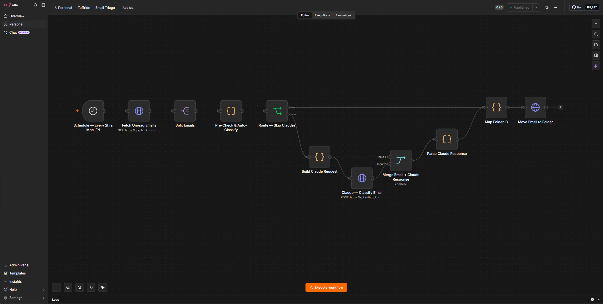

Case Study
An AI-powered email classification system that sorts, routes, and summarises incoming email across two business accounts for a manufacturer's finance team.
Overview
A finance manager at an Australian manufacturer was monitoring two high-volume email accounts across two business entities. Important emails — supplier invoices, urgent orders, warranty claims — were mixed with routine correspondence, marketing emails, and internal notifications. Critical items were being missed or delayed.
We built an AI triage system using n8n and Claude that classifies every incoming email, routes it to the correct Outlook folder, and delivers a structured morning summary at 7am each day.
The challenge
What we built
Key numbers

The approach
Technologies
Start a project
Tell us about your email workflow. We'll show you what AI triage can automate for your team.